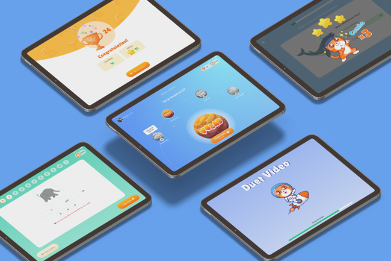

<div class="load-data">
    <div class="popup-main-content">
        <div class="container">
            <div class="blog-details">
                <div class="row">
                    <div class="col-md-12">
                        <div class="blog-info">
                            <div class="tag mt-0">
                                <span>Apr/2023 - App - Product</span>
                            </div>
                            <h4 class="blog-details-title">Vuihoc Station – Personalized Learning with AI-Powered Innovation.</h4>
                        </div>
                    </div>
                    <div class="col-lg-12">
                        <div>
                            <a class="blog-link" href="https://www.figma.com/design/cLz6lVBSr5thFWw9oX6EBb/App-Station?node-id=1-2&p=f&t=kkR4WAt9YslOoz5c-0" target="_blank">🥳 View the design on Figma ✌️</a>
                        </div>
                        <div class="row">
                            <div class="col-md-6">
                                
                            </div>
                            <div class="col-md-6">
                                
                            </div>
                        </div>
                        <div class="blockquote">
                            <p>“ Vui Học Station is a learning app for students aged 4 to 11 at the Station learning center. It features a bright blue and orange color scheme, Glassmorphism with 2D illustrations, interactive mascots, and a user-friendly layout with engaging visual effects. The design ensures an intuitive and fun learning experience for young learners. ”</p>
                        </div>
                        <!-- /blockquote -->

                        <h3 class="blog-details-sec-title">What is UX.</h3>
                        <p class="mt-30">One touch of a red-hot stove is usually all we need to avoid that kind of discomfort in future. The same is true as we experience the emotional sensation of stress from our first instances of social rejection ridicule. We quickly learn to fear and thus automatically avoid potentially stressful situations of all kinds, including.</p>
                        <p class="mt-30">This response is important for our ability to learn from mistakes, but it alsogives self-criticism, because it is part of the threat-protection system. In other words.</p>
                    </div>

                    <div class="col-md-12">
                        <div class="divider"></div>
                        <!-- /divider -->
                    </div>
                    
                    <div class="col-md-12">
                        <div class="blog-details-nav d-flex justify-content-between">
                            <div>
                                <a class="blog-link" href="blog-details.html"> <small>PREVIOUS POST</small></a>
                            </div>
                            <div class="text-right">
                                <a class="blog-link" href="blog-details.html"><small>NEXT POST</small></a>
                            </div>
                        </div>
                        <!-- /portfolio-details-nav -->
                    </div>
                </div>
            </div>
            <!-- /blog-details -->
        </div>
    </div>
</div>